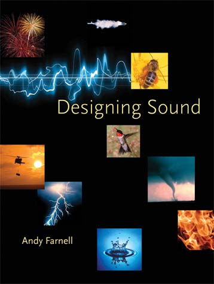
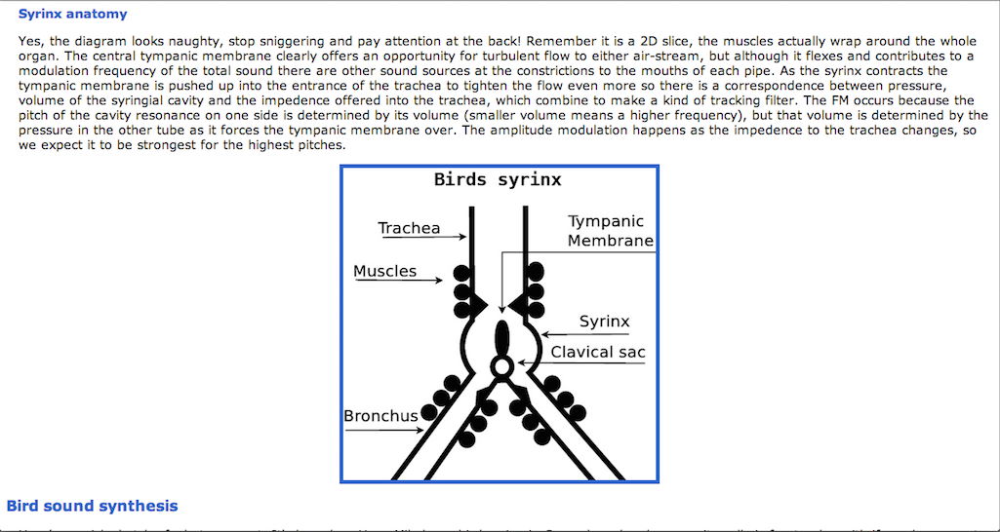
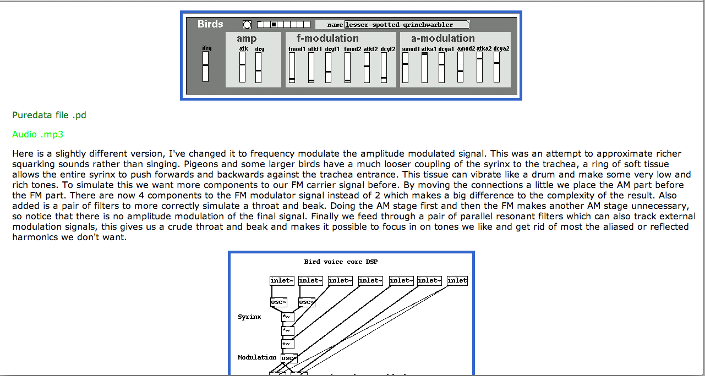

Untitled
Audio
Bird Sounds
Add sounds to :

Sounds
Realistic? - Maybe
Interactive? -
Definitely!
Browser Based? -
Definitely!
YAY!! I GET TO USE WEBAUDIO API !!!!!
Sound Design
Andy Farnell - http://obiwannabe.co.uk/

Bird Sound Synthesis
Moar Bird Sounds!
Amplitude Modulation + Frequency Modulation

Pure-Data -> WebAudio

Psst.. Wanna see some code?
Oscillators
// Create Oscillators
var carrierOsc = audioContext.createOscillator();
var modOsc = audioContext.createOscillator();
var amOsc = audioContext.createOscillator();
var modOscGain = audioContext.createGain();
var amOscGain = audioContext.createGain();
AM + FM
// Create the AM/FM structures
var fm = new fmSynth(audioContext, carrierOsc, modOscGain);
var am = new amSynth(audioContext, fm, amOscGain);
Moar Code!
Envelopes
// Create control envelopes
this.mainEnvelope = new paramEAD(audioContext, mainGain.gain);
this.fmFrequencyEnvelope = new paramEAD(audioContext, modOsc.frequency);
this.amFrequencyEnvelope = new paramEAD(audioContext, amOsc.frequency);
this.fmGainEnvelope = new paramEAD(audioContext, modOscGain.gain);
this.amGainEnvelope = new paramEAD(audioContext, amOscGain.gain);
Connections
Profit??
// Connect the AM output to destination
am.connect(mainGain);
mainGain.connect(panner);
panner.connect(audioContext.destination);